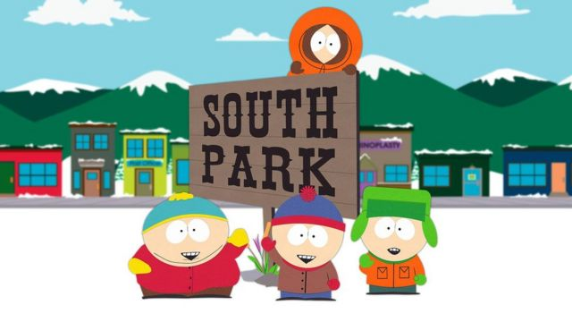

South Park is an American animated sitcom created by Trey Parker and Matt Stone and developed by Brian Graden for Comedy Central. The series revolves around four boys—Stan Marsh, Kyle Broflovski, Eric Cartman, and Kenny McCormick—and their exploits in and around the titular Colorado town. South Park became infamous for its profanity and dark, surreal humor that satirizes a substantial amount of subject matter.